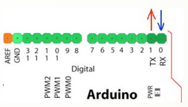
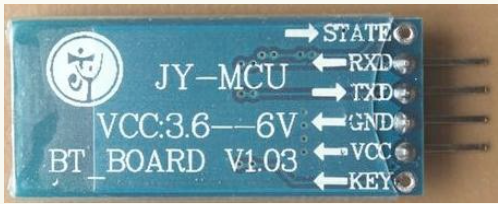
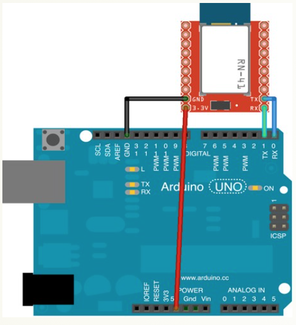
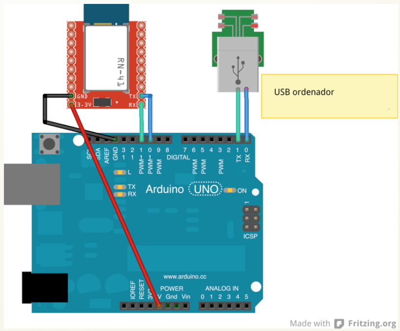

Descripción y esquemas
Vamos a utilizar en estos ejemplos un módulo esclavo de bluetooth JY-MCU muy común y económico. Es posible usar otros módulos ya que existe un mercado de desarrollo continuo, en cualquier caso el funcionamiento básico es el mismo. Dicho módulo por tratarse de un módulo esclavo, está configurado para conectarse a un maestro y recibir órdenes de él.
Como ya sabrás los dipositivos de este tipo tienen que “emparejarse” y tienen que compartir una contraseña para que los datos puedan intercambiarse. Por defecto, estos módulos tienen la contraseña 1234, aunque tanto esto como el nombre, pueden ser actualizados mediante unos comandos especiales, llamados AT y que veremos un poco más adelante.
Arduino tiene 2 pines que permiten enviar y transmitir datos serie (uno datos tras otro). Lo usamos continuamente cuando enviamos un programa desde nuestro ordenador a Arduino o cuando hacemos una lectura desde el monitor serie (con un Serial.print();).

Arduino tiene definidos estos pines como:
- pin digital 0: RX <- (Arduino recibe a través de este pin).
- pin digital 1: TX -> (Arduino envía a través de este pin).
El módulo bluetooth tiene 4 patillas. 2 para la alimentación y 2 para la comunicación.

Es MUY IMPORTANTE conectar de manera correcta estos pines con Arduino para la correcta comunicación. La patilla que emite los datos (TX) en el bluetooth debe estar conectada a la que recibe los datos (RX) en arduino, y viceversa.
Aunque el módulo funciona a 3.3v, normalmente las placas comerciales, (como la que estamos usando), llevan un regulador y las podemos conectar directamente a los 5v de Arduino.

Una vez "pareados" los dos dispositivos bluetooth, desde Arduino podemos guardar los datos obtenidos con una simple instrucción:
dato = Serial.read();
NOTA:
Ten en cuenta que estamos usando los 2 mismos pines que arduino usa para la comunicación USB con el ordenador (0, 1), así que siempre que quieras usar el cable para pasar el código o para leer datos desde el monitor, el bluetooth deberá estar DESCONECTADO.
CONFIGURACIÓN DEL MÓDULO (AVANZADO):
Inicialmente no necesitas configurarlo, sino que al cargar el código desde el ordenador, conectarás el módulo y este empezará a parpadear indicando que está buscando un master al que conectarse, (por ejemplo tu teléfono o una llave bluetooth usb conectado a un pc).
Pero si quieres modificar cosas como la velocidad de conexión, el nombre o la contraseña de tu módulo, aquí te dejamos un código para que subas a tu arduino y mediante el monitor serie lo configures.
Para ello hemos creado un nuevo puerto serie para que no interfiera con el USB y podamos usarlo simultáneamente, lo haremos en las patillas 10 y 11.
Deberás conectar el módulo como ves en la figura, y luego cargar el código. Una vez súbido, abre la consola serie y (EN MAYÚSCULAS) ejecuta los comandos que necesites.
Una vez finalizado, puedes desconectar el módulo BT y usarlo con normalidad.
